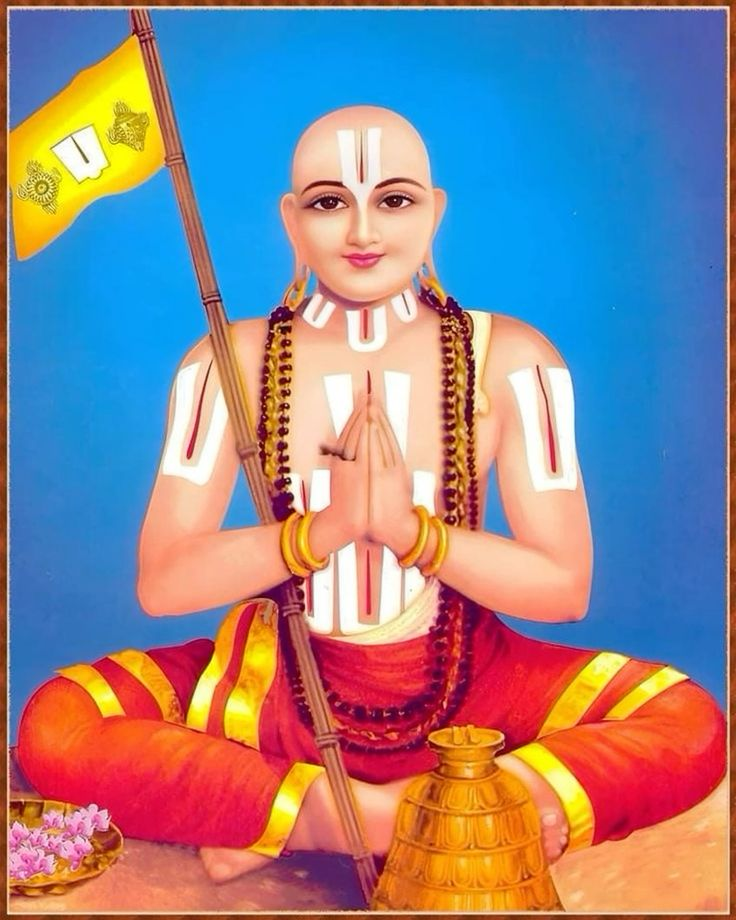
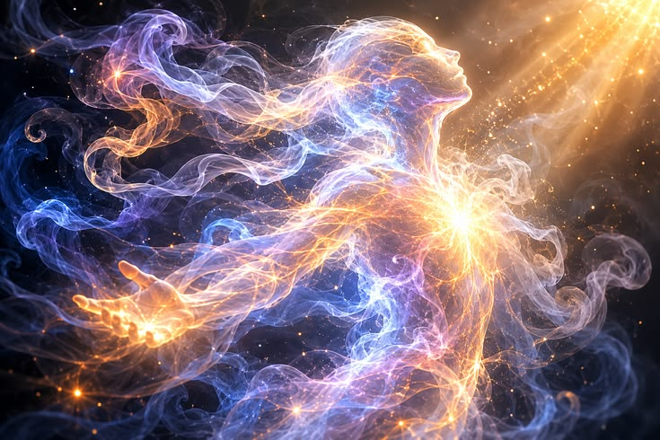

Who Was Ramanuja?
Ramanuja was one of the most influential Indian philosophers and theologians of the Vedanta tradition. He is traditionally dated to around the eleventh and twelfth centuries CE and is best known for developing and systematically defending Vishishtadvaita Vedanta, commonly translated as "qualified non-dualism" or "qualified non-duality."
Ramanuja's philosophy presents Brahman as the supreme and ultimate reality, understood in personal terms as Narayana or Vishnu. For Ramanuja, Brahman is not an impersonal absolute without qualities. The supreme reality possesses infinite auspicious attributes and is the ultimate ground, ruler, and sustaining principle of all existence.
Unlike interpretations of Advaita Vedanta associated with Adi Shankaracharya, Ramanuja maintained that the plurality experienced in the world should not simply be treated as ultimately unreal. Individual souls and the material world are real, although their existence is completely dependent upon Brahman. Reality is therefore understood as a profound unity that nevertheless includes genuine distinctions.
A central feature of Ramanuja's philosophy is his account of the relationship between God, individual souls, and the material universe. Souls (jīvas) and matter (prakṛti) are commonly described within his philosophical system as inseparable from Brahman and dependent upon the supreme reality. This allows Ramanuja to defend both the unity of ultimate reality and the reality of plurality.
Ramanuja's thought also closely connects metaphysics with devotion. Knowledge of Brahman is not merely an abstract intellectual achievement but is related to bhakti, loving devotion to the supreme God, and to the possibility of liberation. His interpretation of the Upanishads, the Bhagavad Gita, and the Brahma Sutras became one of the most important philosophical foundations of the Sri Vaishnava tradition and continues to influence Hindu philosophy and religious thought.
Ramanuja's Life and Historical Background

Ramanuja was an influential Indian philosopher and theologian who is generally placed in the eleventh and twelfth centuries CE. Traditional accounts commonly date his life to approximately 1017–1137 CE, although some details of his biography and chronology remain dependent upon later historical and religious traditions.
He lived and worked within the intellectual and religious environment of medieval South India, where philosophical debate, Sanskrit learning, temple traditions, and devotional movements were deeply interconnected. Ramanuja became especially associated with the Sri Vaishnava tradition, which united philosophical reflection on Vedanta with devotion to Vishnu and Narayana.
Ramanuja's philosophical work developed within the wider intellectual environment of Vedanta, where thinkers interpreted the Upanishads, the Bhagavad Gita, and the Brahma Sutras while debating the nature of Brahman, the individual self, the material world, knowledge, and liberation.
His importance lies not simply in religious devotion but in the systematic philosophical interpretation he gave to these authoritative texts. Ramanuja developed arguments concerning reality, God, consciousness, causation, knowledge, ethics, devotion, and liberation, eventually establishing Vishishtadvaita as one of the major traditions of Vedanta philosophy.
Ramanuja's influence extended far beyond his own lifetime. His interpretations shaped later Sri Vaishnava thought and provided one of the most significant philosophical alternatives to Advaita Vedanta. His work remains important because it attempts to explain how God, individual souls, and the material universe can be genuinely distinct while still belonging to a unified and completely dependent reality.
Ramanuja: Quick Facts
- Name — Ramanuja
- Period — Traditionally dated to approximately 1017–1137 CE, although his chronology is debated
- Philosophical tradition — Vedanta
- Philosophical school — Vishishtadvaita Vedanta
- Religious tradition — Sri Vaishnavism
- Central philosophical concern — The relationship between Brahman, individual souls, and the material world
- Understanding of Brahman — Supreme personal reality associated with Vishnu or Narayana
- Major themes — Brahman, soul, world, devotion, knowledge, karma, grace, and liberation
- Major works — Sri Bhashya, Vedartha Sangraha, and Gita Bhashya
What Is Vishishtadvaita According to Ramanuja?
Vishishtadvaita is commonly translated as "qualified non-dualism" or "qualified non-duality." It is the philosophical system most closely associated with Ramanuja and represents one of the major interpretations of Vedanta. The system affirms that ultimate reality is fundamentally one while rejecting the conclusion that genuine distinctions between God, individual souls, and the material world must therefore be denied.
The term advaita expresses non-duality, while vishishta indicates qualification or distinction. Ramanuja's philosophy therefore presents Brahman as a unified reality that is inseparably related to real plurality. The unity of Brahman does not mean that everything exists as an undifferentiated and featureless absolute. Instead, Brahman is understood as the supreme reality qualified by real attributes and modes.
For Ramanuja, Brahman is the supreme and independent reality, understood in personal theistic terms as Narayana or Vishnu. Brahman possesses innumerable auspicious qualities and is characterized by knowledge, power, goodness, and other perfections. Ramanuja therefore rejects interpretations of the ultimate reality that treat Brahman as completely devoid of all meaningful attributes or determinations.
Individual selves, or jīvas, and the material universe are also real. However, they are not independent realities existing outside or alongside Brahman. Their existence depends completely upon the supreme reality. Ramanuja's system thus attempts to preserve both the genuine plurality found in experience and the ultimate unity affirmed in the Vedantic scriptures.
A central idea in Vishishtadvaita is that Brahman exists in an inseparable relationship with souls and matter. Ramanuja frequently explains this relationship through the concept of śarīra–śarīrin, or the relationship between body and the indwelling self. Souls and the material world can be understood as belonging to and being dependent upon Brahman, while Brahman remains their inner controller and ultimate ground.
Vishishtadvaita therefore occupies a distinctive position within Vedanta. It affirms the unity of reality without reducing the world to mere illusion and affirms real distinction without accepting the existence of multiple independent ultimate realities. This philosophical framework provides the basis for Ramanuja's accounts of God, the soul, devotion, knowledge, and liberation.
Ramanuja's Philosophy of Brahman and God
The concept of Brahman stands at the center of Ramanuja's philosophy. He interprets Brahman as the highest and ultimate reality described in the Upanishads and identifies this supreme reality with the personal God, Narayana or Vishnu. Brahman is the ultimate source, sustainer, ruler, and inner controller of all that exists.
For Ramanuja, Brahman is not an impersonal absolute devoid of qualities. The supreme reality possesses infinite auspicious attributes, traditionally understood as qualities that express divine perfection rather than limitation. Knowledge, power, goodness, compassion, and sovereignty are therefore meaningful features of Brahman and not merely provisional ways of speaking about an ultimately featureless reality.
This understanding of Brahman is closely connected with Ramanuja's interpretation of the Vedantic scriptures. He argues that passages describing the unity and supremacy of Brahman must be understood together with passages that describe Brahman as possessing knowledge, will, power, and other positive characteristics. His philosophical method therefore seeks an interpretation that preserves both divine unity and divine fullness.
Brahman is also fundamentally related to the world and to individual souls. This does not mean that Brahman is merely identical with the changing material universe. Rather, the world and souls depend upon Brahman for their existence and are inseparably related to the supreme reality, while Brahman remains independent and sovereign.
Ramanuja's account of God therefore combines metaphysical and theological concerns. Brahman is not simply the answer to an abstract philosophical question about the ultimate nature of reality. Brahman is also the supreme object of devotion, the inner ruler of all beings, and the reality toward which the liberated soul is ultimately directed.
This personal understanding of Brahman is one of the defining features of Vishishtadvaita. It allows Ramanuja to connect philosophical inquiry with religious devotion without treating devotion as philosophically secondary. Knowledge of Brahman, ethical transformation, devotion, and divine grace all become important within his wider account of the path toward liberation.
Ramanuja on God, Soul, and World
One of the most important philosophical questions addressed by Ramanuja is how God, individual consciousness, and the material universe can be understood within a single account of reality. Vishishtadvaita attempts to explain both the unity of Brahman and the genuine plurality experienced in the existence of individual souls and the changing world.
Ramanuja maintains that individual souls, or jīvas, are real and distinct from one another. Each soul is conscious and capable of knowledge, experience, and action, although its existence and powers ultimately depend upon Brahman. The soul is therefore neither identical with the supreme God nor an entirely independent reality existing outside divine dependence.
The material world is also real within Ramanuja's philosophical system. Matter, commonly discussed in relation to prakṛti, undergoes change and transformation, yet it is not simply dismissed as an illusion. The reality of the world is important because Ramanuja's interpretation of Vedanta seeks to take seriously both religious experience and the scriptural descriptions of creation, embodiment, action, and liberation.
A central framework for explaining this relationship is the concept of śarīra–śarīrin, often expressed through the relationship between body and the indwelling self. Souls and matter function as the "body" of Brahman in a philosophical sense: they are completely dependent upon, supported by, and controlled by the supreme reality. Brahman, as the inner self or controller, remains distinct from the realities that depend upon him.
This analogy should not be understood as meaning that Brahman possesses a physical body in the ordinary human sense. Its philosophical purpose is to express a relationship of dependence and inseparability. The universe cannot exist independently of Brahman, yet Brahman is not exhausted by or reduced to the changing forms of the universe.
Ramanuja's account therefore allows reality to possess genuine plurality without abandoning ultimate unity. God, souls, and matter are not three completely independent ultimate principles. Brahman alone is fully independent, while souls and the world exist as real but dependent aspects of the larger unified order grounded in the supreme reality.
This relationship between God, soul, and world also provides the foundation for Ramanuja's account of devotion and liberation. Because the individual soul remains a real conscious being, liberation does not simply mean the destruction of individuality. Instead, the liberated soul attains its highest fulfillment in a transformed and direct relationship with Brahman, understood as the supreme personal reality.
What Did Ramanuja Teach About the Soul?

Ramanuja regards the individual self, or jiva, as a real and irreducible conscious entity, not a fleeting appearance or a fragment of illusion waiting to dissolve. Each soul possesses its own eternal identity, its own stream of experience, and its own moral history carried across countless lifetimes. This marks a sharp departure from readings of Vedanta that treat individuality itself as something to be explained away once true knowledge dawns.
For Ramanuja, the soul is not simply identical with Brahman in the strict non-dual sense advanced by earlier Advaita thinkers. To say the soul "is" Brahman without qualification, he argues, empties the words of scripture that consistently describe a relationship of worship, dependence, and loving surrender between the self and the divine. Identity language in the texts, on his reading, points to an organic unity, not a flat equation between the two.
At the same time, the soul does not exist independently of God in any sense. Its existence, its capacity for action, and its ultimate fulfillment all derive from and rest upon Brahman, much as the body depends on the self that animates it. Ramanuja uses this very image, describing individual souls as forming the "body" of God, to capture a relationship of genuine distinction combined with total, unbroken dependence.
The soul's condition in ordinary existence is bound up with karma and the long cycle of birth, action, and rebirth that keeps it tied to the material world. Ignorance of its true relationship to Brahman keeps the soul entangled in this cycle, mistaking bodily identity for its real nature. Liberation, for Ramanuja, means shedding this confusion rather than dissolving the self altogether.
Liberation itself, in this framework, is not extinction or absorption into an undifferentiated absolute but the soul's entry into its proper, eternal relationship with God, marked by direct loving communion. The liberated soul retains its individuality even in this final state, continuing to exist as a conscious being in eternal service and nearness to Brahman. This vision of liberation as relationship rather than dissolution runs through the whole of Ramanuja's thought.
Is the World Real According to Ramanuja?
Yes, and this affirmation sits at the very center of Ramanuja's system. The reality of the material world is not a peripheral detail but one of the defining features that separates his philosophy from other schools of Vedanta. For Ramanuja, denying the world's reality would undermine the coherence of scripture, moral responsibility, and everyday experience alike.
Ramanuja does not treat the empirical world as a mere illusion, or maya, that vanishes once ultimate knowledge is attained. Matter, bodies, time, and the diversity of creatures are all real constituents of existence. Their reality, however, is not self-sufficient: everything material depends entirely on Brahman for its being, much as an effect depends on its cause.
This position sharply distinguishes Vishishtadvaita from classical Advaita interpretations, particularly those following Shankara, which regard the phenomenal world as ultimately grounded in ignorance and destined to be sublated once the self recognizes its identity with Brahman. Ramanuja rejects this picture, insisting that a world dismissed as ultimately unreal cannot be the arena in which devotion, ethics, and scripture meaningfully operate.
For Ramanuja, the world together with individual souls forms part of the ordered whole dependent upon Brahman, functioning as Brahman's body in the same way souls do. Dependence, in his framework, does not equal unreality; rather, it explains precisely how and why the world exists as it does. The cosmos is real because it is sustained by a real, conscious, and personal source.
This affirmation of a real world also shapes how Ramanuja understands human life within it. Since creation is not an error to be overcome but an expression of divine will, everyday action, worship, and social duty retain genuine significance rather than being reduced to preliminary steps toward escaping an illusion. The world becomes a meaningful field for the soul's gradual approach toward God.
Ramanuja and Advaita Vedanta: What Is the Difference?
Ramanuja is particularly important in the history of Indian philosophy because his Vishishtadvaita provides a major and enduring alternative to Advaita Vedanta, especially the influential interpretation associated with Shankara. Both thinkers claim to interpret the same Upanishadic texts, yet they arrive at strikingly different conclusions about the nature of Brahman, the soul, and the world.
Advaita emphasizes the ultimate non-duality of Brahman, treating apparent distinctions between self, world, and God as products of ignorance that dissolve upon enlightenment. Ramanuja rejects this reading, arguing instead that individual souls and the material world are genuinely and permanently real, existing as qualifications, or attributes, of the one supreme Brahman rather than as illusions superimposed upon it.
Where Shankara's Brahman is ultimately impersonal and beyond all qualities, Ramanuja insists that Brahman is a personal, conscious God, full of infinite auspicious qualities such as compassion, knowledge, and power. This personal conception of the divine underwrites the centrality of devotion, or bhakti, in Ramanuja's system, since a qualityless absolute cannot be an object of love in the way a personal God can.
The two schools also diverge sharply on the meaning of liberation. Advaita treats liberation as the realization of an identity that was always already true, undoing the illusion of separateness entirely. Ramanuja instead describes liberation as the soul entering a state of eternal, blissful communion with a God who remains distinct from it, preserving relationship rather than erasing it.
These differences are not merely academic; they shaped centuries of devotional practice, temple worship, and philosophical debate across South India and beyond. Vishishtadvaita's insistence on a real world and a real, relatable God gave devotional movements a coherent philosophical foundation, helping bhakti traditions argue that loving surrender to a personal deity was not a lesser path but a fully legitimate route to ultimate truth.
- Advaita Vedanta — emphasizes ultimate non-duality and the identity of Atman and Brahman.
- Vishishtadvaita — affirms one supreme Brahman while maintaining the reality and dependence of souls and the world.
- Ramanuja's Brahman — personal, conscious, and possessed of infinite auspicious qualities.
- The world — real and dependent upon Brahman.
- Individual souls — real conscious entities that remain dependent upon Brahman.
Ramanuja's Philosophy of Bhakti and Devotion
Bhakti, or devotion to God, occupies a central and non-negotiable place in Ramanuja's philosophical and religious thought, standing alongside knowledge and action as a genuine path to liberation rather than a lesser, popular substitute for philosophical rigor. His understanding of reality makes devotion philosophically coherent, since God and the individual devotee are never reduced to an indistinguishable identity that would render love and worship meaningless. Because the soul remains a real, distinct center of consciousness even in its complete dependence on God, a genuine relationship of devotion becomes not just possible but necessary.
Devotion, in Ramanuja's system, is directed toward the supreme personal reality, understood specifically as Vishnu or Narayana, who possesses infinite auspicious qualities such as compassion, beauty, and majesty rather than being an abstract, qualityless absolute. The devotee's relationship with God therefore involves several interwoven dimensions at once: knowledge of God's true nature, love that grows out of that knowledge, ritual and mental worship, felt dependence on divine sustenance, and an eventual posture of surrender. None of these elements stands alone; each reinforces and deepens the others across a lifetime of practice.
This devotional orientation also reshapes how liberation itself is conceived. Rather than treating bhakti as a preparatory stage to be discarded once higher knowledge is reached, Ramanuja treats loving devotion as continuing, and indeed intensifying, even after liberation, since the liberated soul enters into eternal, blissful nearness to God rather than losing its capacity for relationship. Devotion is therefore not merely a means to an end but part of the soul's permanent, fulfilled condition.
Ramanuja's philosophy helped give systematic philosophical expression to a theistic form of Vedanta in which devotion and metaphysical reasoning are closely and deliberately connected, rather than treated as separate domains belonging to religion on one side and philosophy on the other. By grounding bhakti in a carefully argued metaphysics of a real world, real souls, and a real personal God, he gave devotional practice an intellectual foundation that could stand alongside the reasoned systems of rival schools. This synthesis became one of his most lasting contributions to Indian religious philosophy.
What Is Moksha According to Ramanuja?
Moksha, or liberation, is understood by Ramanuja as freedom from the bondage associated with karma and the long, repeating cycle of birth and death known as samsara. This bondage arises from the soul's ignorance of its true nature and its mistaken identification with the body, senses, and material circumstances that surround it lifetime after lifetime. Liberation means breaking this cycle permanently rather than achieving a temporary respite from worldly suffering.
Ramanuja does not understand liberation as the annihilation of the individual self, nor as the sudden discovery that the individual was, all along, simply identical with an impersonal absolute lacking distinct qualities. Such a view, in his estimation, would make the soul's entire spiritual journey pointless, since there would be no real self left to enjoy the fruits of that journey. He insists instead that the very texts describing liberation presuppose a self that continues to exist and experience.
Instead, the liberated soul reaches a state of perfect knowledge, free from the distortions and limitations imposed by embodiment, and enters into a blessed, eternal relationship with God. The distinction between the individual soul and Brahman is not simply erased in this final state; rather, it becomes fully transparent, allowing the soul to recognize with total clarity its dependent yet real relationship to its divine source. The soul's individual consciousness persists, now purified of all ignorance.
Liberation therefore fits naturally with Ramanuja's broader philosophical position on the nature of reality: God is supreme and the ultimate ground of everything, the soul is genuinely real and irreducible, and the soul's highest possible fulfillment consists not in dissolving into an undifferentiated absolute but in its conscious, loving relationship with a personal God. Moksha, in this light, is less an ending than the soul finally becoming fully what it was always meant to be.
Ramanuja on Karma, Knowledge, and Liberation
Ramanuja's account of liberation is woven together with several foundational concepts of Indian philosophy, including karma, scriptural knowledge, devotional practice, and divine grace, none of which he treats as fully separable from the others. Rather than isolating one path as sufficient on its own, he presents a layered picture in which action, understanding, and love of God work together to bring the soul toward its final release.
Karma helps explain the soul's continued involvement in the cycle of embodied existence, since past actions generate consequences that shape present circumstances and future rebirths. Human actions carry real moral weight in this framework, and spiritual liberation requires actively overcoming the accumulated conditions that keep the soul tethered to material existence, not merely waiting passively for release to occur on its own.
Knowledge of the true nature of Brahman, the self, and the relationship between them is therefore essential to Ramanuja's system, since ignorance of this relationship is precisely what traps the soul in bondage in the first place. However, his philosophy does not reduce liberation to abstract intellectual knowledge alone, treated as though correct doctrine by itself could free the soul without any accompanying transformation of the heart.
Devotion and the proper, felt relationship between the individual and God remain central to his theistic Vedanta, giving karma and knowledge their ultimate purpose and direction. Right action performed without attachment, combined with accurate understanding of one's dependence on Brahman, is meant to culminate in loving surrender rather than stopping short at mere correct belief. Together these three strands form a single, integrated path toward liberation.
Ramanuja's Views on Divine Grace and Surrender
Divine grace is an important and recurring element of the Sri Vaishnava interpretation of Ramanuja's thought, functioning as the force that ultimately bridges the gap between the soul's own limited effort and the infinite perfection it seeks. The relationship between the individual and God is not understood merely as a mechanical result of intellectual achievement or ritual correctness, as though liberation could be earned through effort alone in the way a debt is repaid.
The individual is fundamentally and permanently dependent upon God, not only for existence itself but also for the final movement toward liberation, and this dependence means that grace plays an indispensable role in the soul's release. This emphasis reinforces the deeply devotional character of Ramanuja's Vedanta, positioning humility and reliance on God, rather than self-sufficient striving, as the appropriate posture for the seeker.
Later Sri Vaishnava traditions developed the idea of prapatti, or complete surrender to God, in especially significant and elaborate ways, treating it in some interpretations as a direct and sufficient path to liberation in its own right, requiring no further effort once true surrender is achieved. Debates over how prapatti relates to devotion and to one's own effort became a defining feature of later Sri Vaishnava philosophy.
It is important, however, to distinguish these later developments within the tradition from claims about exactly what Ramanuja himself explicitly formulated in his own writings. Subsequent Sri Vaishnava thinkers, including the later Vadagalai and Tenkalai schools, built substantially on his foundation and sometimes disagreed sharply with one another over how far surrender should be emphasized relative to devotion and personal effort.
What Did Ramanuja Write?
Ramanuja is associated with several major Sanskrit works that became foundational texts for Vishishtadvaita Vedanta, shaping how generations of later thinkers within the Sri Vaishnava tradition read scripture and constructed philosophical arguments. Together these works form a coherent body of commentary and independent exposition that systematically defends his theistic reading of Vedanta against rival interpretations.
Sri Bhashya
The Sri Bhashya is Ramanuja's major and most influential commentary on the Brahma Sutras, widely regarded as the definitive philosophical statement of Vishishtadvaita. It presents systematic, closely reasoned arguments for his interpretation of Vedanta, addressing rival readings sutra by sutra and building a comprehensive account of Brahman, the individual soul, matter, and the path to liberation.
Vedartha Sangraha
The Vedartha Sangraha, often translated as a summary or exposition of the meaning of the Veda, presents Ramanuja's interpretation of major Upanishadic teachings and their relationship to his broader theological and philosophical position. It serves as a more accessible complement to the denser Sri Bhashya, tracing how seemingly conflicting scriptural passages fit together within his unified vision of reality.
Gita Bhashya
The Gita Bhashya is Ramanuja's commentary on the Bhagavad Gita, one of the most widely read texts in the Hindu tradition. It interprets the Gita through the lens of his theistic Vedanta, emphasizing the interconnected roles of knowledge, action, and devotion, and drawing out the relationship between the individual soul and God that Krishna's teaching implies throughout the dialogue.
Ramanuja's Main Philosophical Ideas
Ramanuja's philosophy can be understood through several interconnected ideas concerning reality, God, the self, devotion, and liberation, each of which supports and depends upon the others. Taken together, these ideas form a coherent alternative to both purely non-dual readings of Vedanta and to schools that treat the soul and world as entirely separate from the divine.
Vishishtadvaita
Ultimate reality is one, but this unity is qualified, meaning it includes real internal distinctions rather than requiring their elimination, so that individual souls and the material world exist genuinely as attributes of the single supreme Brahman.
Brahman as Personal God
Brahman is understood not as an abstract, impersonal absolute but as the supreme personal reality associated with Vishnu or Narayana, possessing infinite auspicious qualities such as knowledge, power, and compassion that make devotion meaningful.
The Reality of the World
The material world is real rather than merely an illusion or product of ignorance, although it remains completely and permanently dependent upon Brahman for its existence and continuation.
The Reality of Individual Souls
Individual souls are real, conscious, and distinct entities that persist through their many lifetimes and even into liberation. They are dependent upon God for their existence but are never simply identical with God.
God as the Ground of Reality
Everything other than Brahman, including souls and matter, depends upon Brahman for its existence in the way a body depends on the self that animates it, while Brahman does not depend upon the world in the same reciprocal way.
Devotion and Liberation
Bhakti and the soul's ongoing relationship with God are central to Ramanuja's understanding of spiritual liberation, shaping not only the path toward release but also the eternal, blissful condition the liberated soul enjoys.
Ramanuja's Metaphysics: Reality, Dependence, and Unity
Ramanuja's metaphysics grapples with a central puzzle inherited from earlier Vedanta: how the apparent plurality of the world, filled with countless distinct souls and material objects, can exist coherently within a philosophical system centered on one supreme Brahman without collapsing that unity into mere illusion or fragmenting it into unrelated independent realities.
His solution is not to eliminate plurality, as strict non-dualism tends to do, but to understand it as dependent upon and inseparably related to Brahman at every moment. The individual souls and material nature constitute what can be described, through Ramanuja's influential body-soul analogy, as the body of God, while God functions as their inner ruler, animating principle, and sustaining reality in a manner directly parallel to how a self controls and sustains its own body.
This framework provides a genuinely distinctive form of non-dualism, one that differs sharply from both strict monism and strict dualism. There is one ultimate reality, Brahman, but that reality includes genuine internal distinctions among souls and matter rather than requiring their complete negation or reduction to illusion, allowing Ramanuja to affirm both unity and diversity without contradiction.
This metaphysical structure also carries direct consequences for ethics and religious life, since a world and souls that are genuinely real, rather than illusory, give moral action, worship, and social duty lasting significance. Ramanuja's metaphysics is therefore never purely abstract; it is constructed to support and justify the devotional and ethical dimensions of his broader philosophical vision.
Ramanuja on Knowledge and the Nature of Reality
Ramanuja's philosophy treats knowledge as indispensable for properly understanding Brahman, the individual self, and the world, since mistaken beliefs about any of these three keep the soul bound to ignorance and its consequences. His interpretation of Vedanta is firmly grounded in the authoritative scriptures of the tradition, particularly the Upanishads, the Bhagavad Gita, and the Brahma Sutras, which he treats as a unified and internally consistent body of teaching.
His philosophical method involves carefully interpreting apparently conflicting or divergent scriptural statements within a coherent overarching account of Brahman as the supreme personal reality, rather than dismissing difficult passages or treating contradictions as unresolvable. Where a verse seems to support pure non-duality, Ramanuja works to show how it can be read consistently with the reality of souls and world as attributes of Brahman.
This interpretive project was also very much part of his active disagreement with other schools of Vedanta, particularly Advaita, since competing schools drew on many of the same texts to reach opposite conclusions. Ramanuja sought to demonstrate, through close textual argument, that the Upanishadic teachings could support a position in which unity and genuine plurality coexist, rather than being forced to choose between them.
Ramanuja's Contribution to Indian Philosophy
Ramanuja became one of the most influential philosophers in the entire history of Indian Vedanta, standing alongside figures like Shankara and Madhva as one of the three great commentators on the Brahma Sutras. His Vishishtadvaita interpretation offered a systematic, philosophically rigorous alternative to Advaita Vedanta and helped establish a major theistic school of thought that shaped Hindu philosophy and religious practice for centuries afterward.
His work is important precisely because it brings together fields that are often treated separately: metaphysics, theology, scriptural interpretation, ethics, devotion, and the theory of liberation. Rather than isolating these subjects into distinct compartments, Ramanuja weaves them together through the single underlying relationship between God, the soul, and the world, producing a unified vision in which philosophical reasoning and religious life reinforce one another rather than pulling in different directions.
His influence continued powerfully through later Sri Vaishnava thinkers and traditions, who built upon, debated, and refined his ideas across succeeding generations, sometimes dividing into distinct sub-schools while still working within the framework he established. This sustained legacy makes Ramanuja a central and enduring figure in the history of Indian philosophy and Hindu theological thought, whose influence is still felt in Vaishnava temples, commentaries, and devotional practice today.
Beyond the boundaries of his own tradition, Ramanuja's work also shaped the broader landscape of philosophical debate in India by giving theistic Vedanta a rigorous intellectual footing capable of engaging Advaita on its own terms. His arguments forced rival schools to sharpen their own positions, and later thinkers across multiple traditions found themselves responding, directly or indirectly, to the framework he had laid out in the Sri Bhashya and his other major works.
Ramanuja vs Shankara: Two Major Vedanta Philosophies
Ramanuja and Shankara are widely regarded as among the most important philosophers in the entire history of Vedanta, each leaving behind a systematic commentarial tradition that continues to shape Hindu philosophy today. Although both draw on the same core scriptures, the Upanishads, the Bhagavad Gita, and the Brahma Sutras, their interpretations of ultimate reality differ significantly, producing two of the most influential and enduring schools within Vedanta.
- Shankara — associated with Advaita Vedanta and radical non-dualism.
- Ramanuja — associated with Vishishtadvaita, or qualified non-dualism.
- Shankara — emphasizes Brahman as ultimately beyond empirical distinctions.
- Ramanuja — understands Brahman as the supreme personal reality possessing auspicious qualities.
- Ramanuja — maintains that individual souls and the world are real and completely dependent upon Brahman.
These differences are not minor points of emphasis but reflect two genuinely distinct visions of what liberation, devotion, and the ultimate nature of reality actually mean, which is why the debate between Advaita and Vishishtadvaita became one of the major and most productive philosophical developments in the history of Indian Vedanta. Later thinkers on both sides continued to sharpen and defend their positions, ensuring that the disagreement between these two towering figures remained a living and generative conversation rather than a settled dispute.
Why Is Ramanuja Important in Indian Philosophy?
Ramanuja is important because he developed one of the most influential and philosophically rigorous interpretations of Vedanta, providing a systematic account of exactly how God, souls, and the world are related to one another rather than leaving that relationship vague or merely assumed. His careful, sutra-by-sutra argumentation in the Sri Bhashya gave Vishishtadvaita a level of philosophical seriousness that allowed it to stand as a genuine rival to Advaita rather than a purely devotional alternative.
His philosophy demonstrates that a commitment to ultimate unity does not necessarily require denying the reality of the individual self and the material world, opening a middle path between strict non-dualism, which treats plurality as illusory, and strict dualism, which struggles to explain how genuinely separate realities could depend on one another so completely. This middle path proved deeply attractive to later thinkers seeking a philosophically defensible basis for personal devotion.
Ramanuja also helped establish a powerful and lasting philosophical connection between rigorous metaphysical reasoning and heartfelt religious devotion, showing that the two need not be in tension with one another. His influence therefore extends well beyond abstract metaphysics into theology, spirituality, temple worship, and the broader history of Vaishnava thought, making him a figure whose impact is felt in both scholarly and devotional contexts alike.
Ramanuja's Philosophy Explained Simply
Put simply, Ramanuja argued that there is one supreme reality, Brahman, but that this does not mean the existence of individual souls and the world should be dismissed as simply unreal or illusory. Where some interpretations of Vedanta treat the visible world and the individual self as things to be seen through and ultimately discarded, Ramanuja insists they are real and matter deeply, both philosophically and spiritually.
For Ramanuja, God is the supreme personal reality, understood specifically as Vishnu or Narayana, a being with real qualities, real compassion, and a real capacity for relationship rather than an abstract, featureless absolute. Individual souls and the material world are real in their own right, yet they depend completely upon God for their existence, much as a body depends entirely on the self that animates it, giving Ramanuja's system both unity and genuine diversity at the same time.
- Philosophical school: Vishishtadvaita Vedanta.
- Supreme reality: Brahman, understood as the personal God.
- God: Associated with Vishnu or Narayana.
- World: Real and dependent upon Brahman.
- Individual soul: Real and dependent upon Brahman.
- Spiritual path: Knowledge, devotion, and relationship with God.
- Goal: Moksha, liberation from bondage and the attainment of the soul's highest relationship with God.
Frequently Asked Questions About Ramanuja
Who was Ramanuja?
Ramanuja was an influential Indian philosopher and theologian of the Vedanta tradition. He is best known for developing Vishishtadvaita Vedanta, or qualified non-dualism.
What is Ramanuja famous for?
Ramanuja is famous for his Vishishtadvaita philosophy, his interpretation of Vedanta, and his account of the relationship between Brahman, individual souls, and the material world.
What is Vishishtadvaita according to Ramanuja?
Vishishtadvaita is Ramanuja's interpretation of non-dualism in which Brahman is the one supreme reality while individual souls and the material world remain real and completely dependent upon Brahman.
What did Ramanuja believe about Brahman?
Ramanuja understood Brahman as the supreme personal reality, associated with Vishnu or Narayana and characterized by infinite auspicious qualities.
Did Ramanuja believe the world was real?
Yes. Ramanuja regarded the material world as real, although it is completely dependent upon Brahman for its existence.
What did Ramanuja believe about the soul?
Ramanuja regarded individual souls as real conscious entities. They are distinct from God but completely dependent upon Brahman.
What is the difference between Ramanuja and Shankara?
Shankara is associated with Advaita Vedanta, which emphasizes radical non-duality. Ramanuja's Vishishtadvaita maintains that Brahman is one while individual souls and the world remain real and dependent upon Brahman.
What did Ramanuja teach about bhakti?
Ramanuja gave an important philosophical role to bhakti, or devotion to God. Because God and the individual soul remain genuinely related, devotion becomes an important part of spiritual life.
What did Ramanuja teach about moksha?
Ramanuja understood moksha as liberation from the bondage of karma and the cycle of birth and death, involving the soul's perfected relationship with God rather than the annihilation of individuality.
What books did Ramanuja write?
Major works associated with Ramanuja include the Sri Bhashya, Vedartha Sangraha, and Gita Bhashya.
Why is Ramanuja important today?
Ramanuja remains important because his Vishishtadvaita philosophy provides a major account of how unity, plurality, God, individual consciousness, the material world, devotion, and liberation can be understood together.
Related Indian Philosophers and Thinkers
Ramanuja belongs to a long tradition of Indian philosophical inquiry. Explore other thinkers who developed influential ideas about consciousness, reality, religion, ethics, liberation, and the nature of the self.
Philosophical Traditions Connected to Ramanuja
Ramanuja's philosophy is most closely connected with Vedanta and Sri Vaishnavism. His ideas are especially important for understanding the philosophical debate between Vishishtadvaita and Advaita Vedanta.
Why Ramanuja Still Matters in Philosophy
Ramanuja's philosophical legacy lies in his attempt to understand ultimate unity without denying the reality of individual souls and the world. His Vishishtadvaita Vedanta presents Brahman as the supreme personal reality upon which everything else depends.
His philosophy also demonstrates how metaphysics and devotion can be integrated into a systematic philosophical worldview. Questions about God, consciousness, reality, knowledge, karma, devotion, and liberation become interconnected within his account of existence.
For this reason, Ramanuja remains one of the central figures for anyone studying Indian philosophy, Vedanta, Hindu philosophy, comparative theology, or the philosophical relationship between God, soul, and world.
Explore Indian Philosophers